#1
Louis Portal
Zürich
Gewählt 2021, Konsular & ASFE
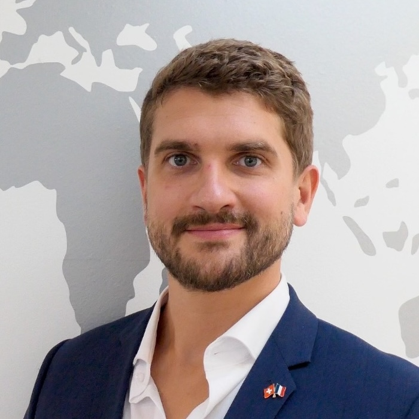
#2
Marie Galy-Dejean
Zürich
Bildung, Gemeinschaft & Recht
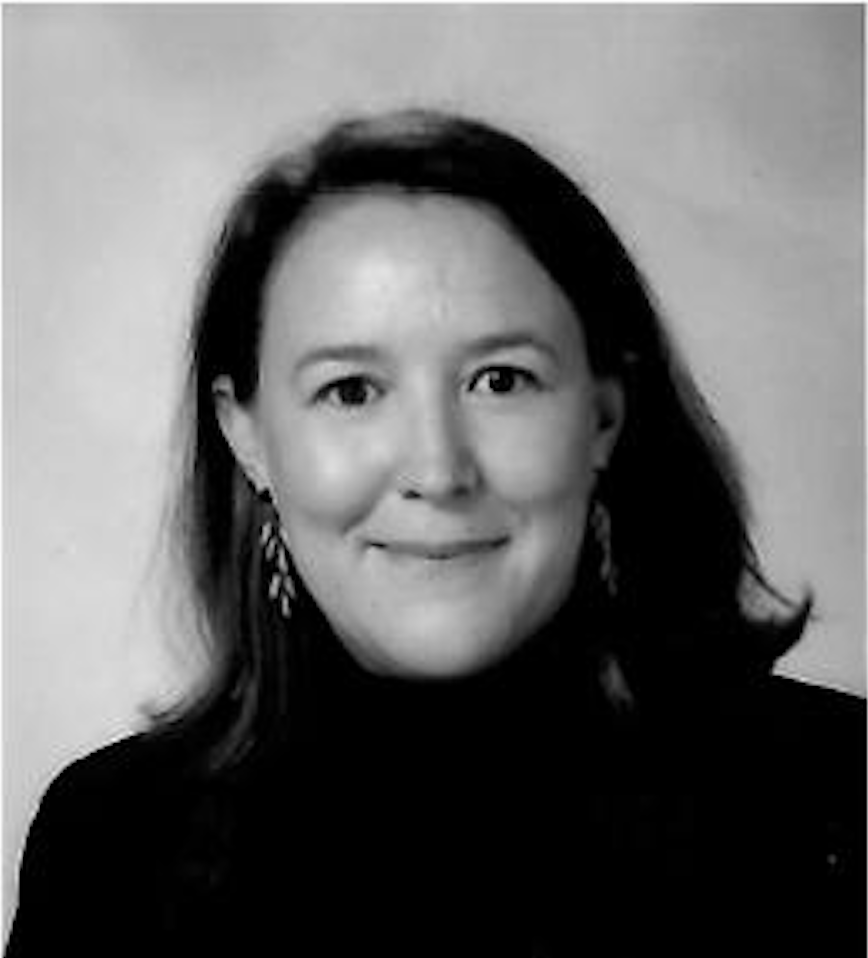
#3
Nourane Aleyan
Bern
Vereine, Gemeinschaft & Bern
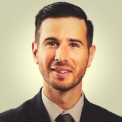
#4
Elisabeth Lefebvre
Zürich
Vereine, Arbeit & Gemeinschaft
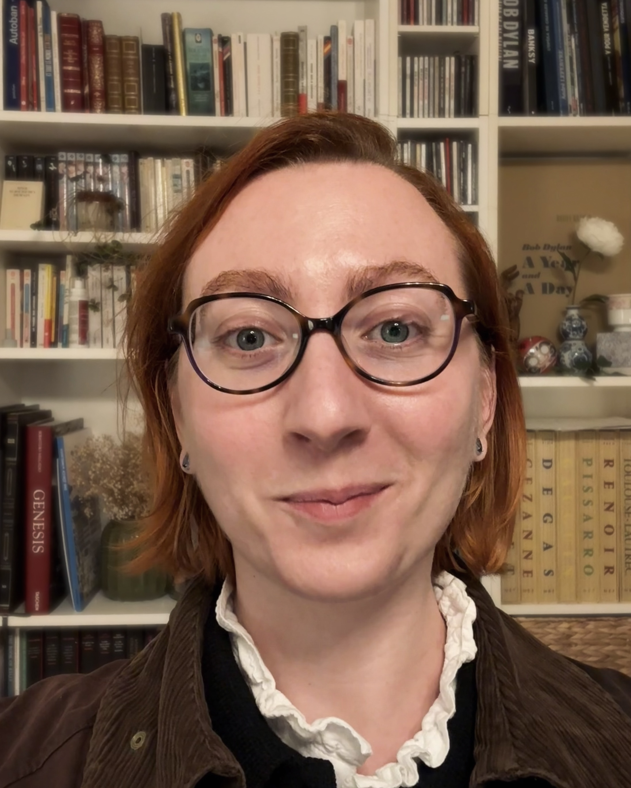
#5
Benjamin Delahaye
Zürich
Bildung, Gemeinschaft & Comedy
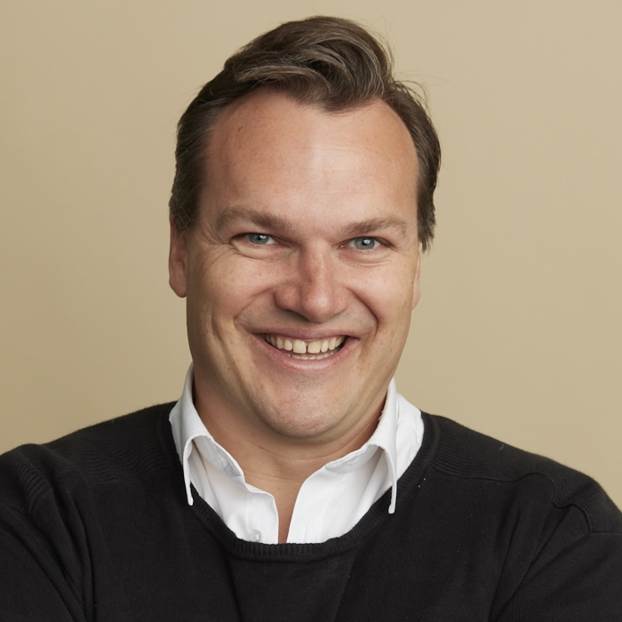
#6
Sophia Vinçonneau
Schaan 🇱🇮
Gesundheit, Familie & Liechtenstein
#7
Thierry Cerclé
Lugano
Gemeinderat, Arbeit & Tessin
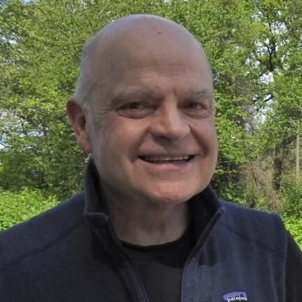
#8
Fabiola Jaymond
Zürich
Vereine, Startups & Arbeit
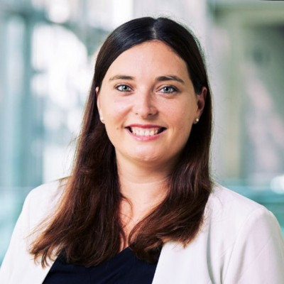
#9
Jean-Marc Lherminé
Bern
Arbeit, Ruhestand & Bern
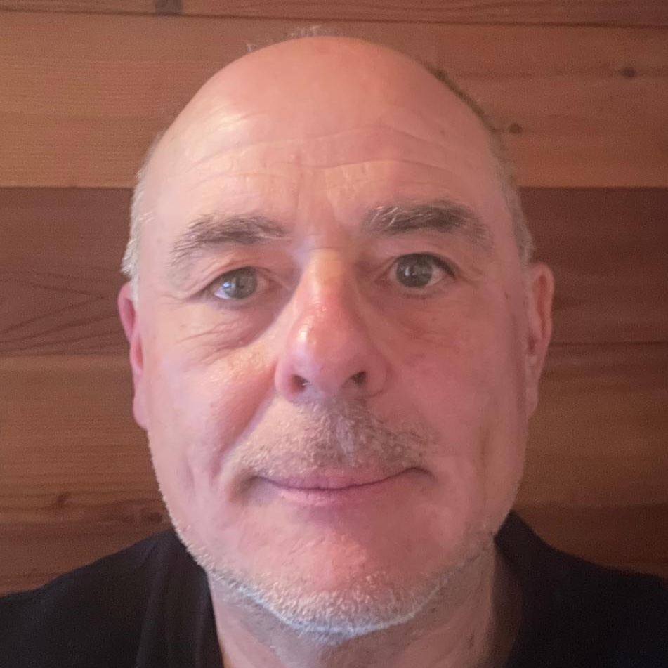
#10
Ingrid Kobler
Chur
Bildung, Familie & Graubünden
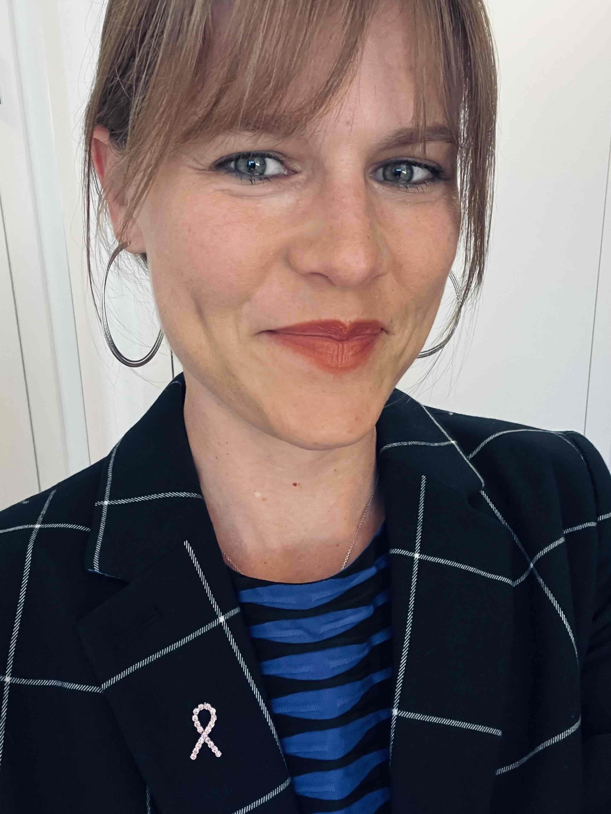
#11
Pascal Ravery
Zug
Finanzen, Arbeit & Karriere
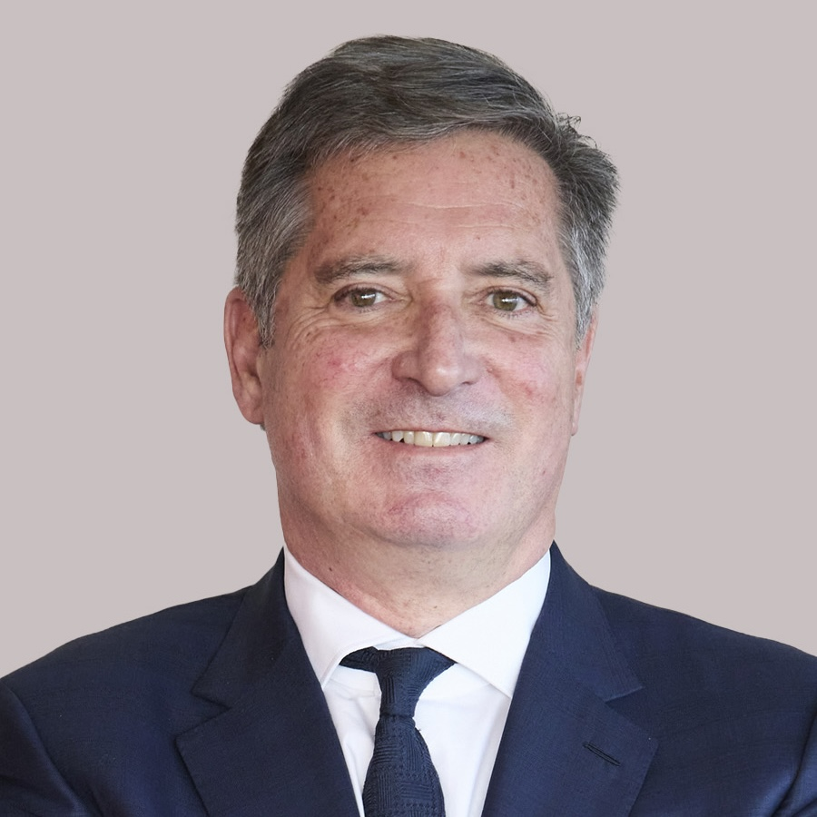
#12
Déborah Schiestel
Basel
Pharma, Arbeit & Basel
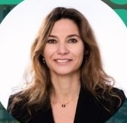
Anmeldung auf der konsularischen Wählerliste bis zum 24. April 2026
Zur Wahl anmelden Meine Situation prüfen